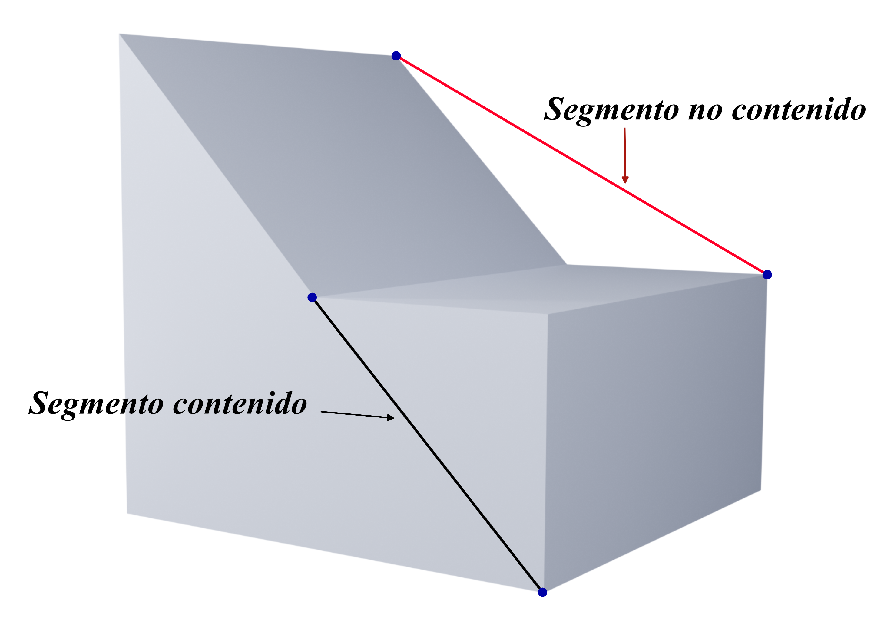
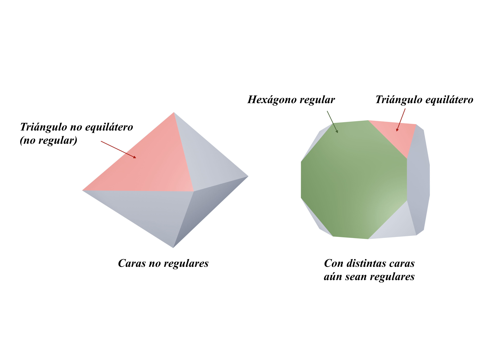
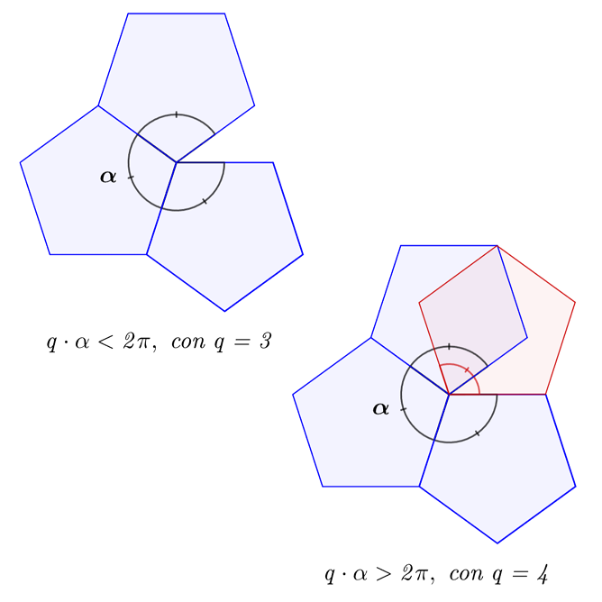
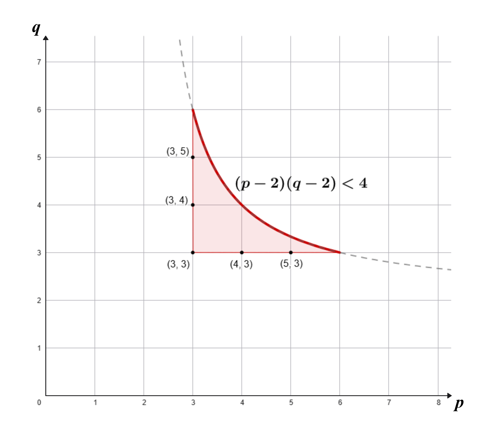

CARACTERIZACIÓN GEOMÉTRICA
En esta sección se presentan los fundamentos geométricos que explican qué hace únicos a los sólidos platónicos: su definición como poliedros regulares convexos, la notación de Schläfli que permite describir su estructura y las relaciones matemáticas que justifican por qué solo existen cinco. A partir de propiedades como la simetría, la dualidad y el teorema de Euler, se construye una visión integrada de su carácter formal y su relevancia dentro de la geometría clásica.
Definición Matemática
La palabra poliedro proviene del griego polý, que significa "muchos", y hédra, que significa "cara" o "base" (Oliván, 2014). En términos geométricos, Oliván (2014) define el concepto de la siguiente manera:
Un poliedro es un cuerpo goemétrico en tres dimensiones cuyas caras son planas y que encierra un volumen finito. Los segmentos que unen dos caras se denominan aristas y los puntos en los que se cortan varias aristas se llaman vértices (p. 106).
Ejemplo de poliedro y sus componentes
Los sólidos platónicos representan un caso particular de poliedros, específicamente, de poliedros regulares, es decir, todas sus caras, aristas y vértices son congruentes; en ellos, las caras se encuentran bajo los mismos ángulos y con igual número de aristas en cada vértice, lo que implica que todas las caras correspondan a un mismo polígono regular (Bellamy, 2016). Y, a la vez, convexos en donde para cualquier par de puntos pertenecientes al sólido, el segmento que los une queda completamente contenido dentro de él; en otras palabras, el sólido no presenta concavidades ni intersecciones hacia su interior.

Ejemplo de poliedro no convexo

Ejemplos de poliedros no regulares
Ejemplo de poliedro regular y convexo (Dodecaedro)
Notación de Schläfli
La notación de Schläfli constituye un sistema simbólico que permite representar de manera compacta la estructura geométrica de los poliedros regulares. Esta notación, introducida por el matemático suizo Ludwig Schläfli (1814-1895) en el siglo XIX, describe a cada sólido mediante un par ordenado de números \(\{p,q\}\), donde ambos parámetros codifican relaciones combinatorias entre las caras y los vértices del poliedro. En términos generales, \(p\) indica el número de lados del polígono que conforma cada cara, mientras que \(q\) representa el número de caras que concurren en un mismo vértice o como el número de aristas que llegan a cada vértice (Bertol, 2015; Henao, 2011).
Ludwig Schläfli (1814-1895)
La notación de Schläfli constituye un lenguaje matemático que condensa las características estructurales de los sólidos platónicos de modo que permite describirles de manera precisa y elegante.
Notación de Schläfli para el hexaedro: \(\{4,3\}\)
| Sólido platónico | Notación de Schläfli |
|---|---|
| Tetraedro | {3,3} |
| Hexaedro | {4,3} |
| Octaedro | {3,4} |
| Dodecaedro | {5,3} |
| Icosaedro | {3,5} |
Notación de Schläfli para cada sólido platónico.
Este sistema no solo ofrece una forma resumida de caraterísticas, sino que revela las correspondencias profundas entre la combinatoria, la simetría y la dualidad que definen la geometría de los sólidos platónicos.
¿Por qué solo son 5 sólidos platónicos?
Hay que tener en cuenta que un vértice de un poliedro es el punto común a 3 o más caras, ya que si es menos, dicho vértice se convierte en tan solo un punto de una recta; en consecuencia, es claro que con 2 caras es imposible construir un poliedro o, en otras palabras, un vértice es la intersección de al menos 3 caras, esto con el fin de permitirle su tridimensionalidad. Por otra parte, si se suma el factor de regularidad, es decir, que todas las caras sean congruentes y regulares, se necesita que la suma de los ángulos que concurren en un mismo vértice debe ser menor a 360°, de modo que las caras no se sobrepogan entre sí.
Demostración visual
Lo anterior es más evidente mediante la notación de Schläfli: Para que un par \(\{p,q\}\) describa un poliedro convexo, siguiendo las condiciones antes mencionadas, la disposición de las \(q\) caras, congruentes entre sí (regularidad), que concurren en cada vértice debe ser tal que la suma de sus ángulos interiores planos sea estrictamente menor que 360° (\(2\pi\) radianes) (DeHovitz, 2016).
Se sabe que el ángulo interior (en radianes) de un polígono regular de \(p\) lados se expresa como: \[\alpha=\dfrac{(p-2)\pi}{p}\]
Por tanto, en cada vértice concurren \(q\) de estos ángulos, cuya suma total debe ser menor que \(2\pi\), es decir: \[q\cdot\dfrac{(p-2)\pi}{p}< 2\pi\]

Ejemplo práctico de la desigualdad para el caso de un pentágono regular
Simplificando y eliminando el factor común \(\pi\), se obtiene la desigualdad fundamental que caracteriza la convexidad de los poliedros regulares:
Desigualdad fundamental
\[(p-2)(q-2) < 4\]
Al combinar esta inecuación con las condiciones mínimas \(p\geq 3\) y \(q\geq 3\) delimita de manera estricta los pares \(\{p,q\}\) posibles, por lo que se obtiene un conjunto finito de 5 soluciones enteras que satisfacen simultaneamente la regularidad y la convexidad, los cuales son: \[\{3,3\}, \{4,3\}, \{3,4\}, \{5,3\}, \{3,5\}\]

Soluciones enteras de \((p-2)(q-2)<4\)
Donde cada uno corresponde a uno de los 5 sólidos platónicos: el tetraedro, el cubo, el octaedro, el dodecaedro y el icosaedro, respectivamente.
Las 5 posibilidades de plegar un vértice tridimensional con polígonos regulares
Relaciones geométricas importantes
Teorema de Euler para poliedros
Entre las relaciones geométricas que describen la estructura de los sólidos platónicos, destaca la establecida por el matemático suizo Leonhard Euler (1707-1783), cuya ecuación expresa de manera simple la conexión entre el número de vértices, aristas y caras de cualquier poliedro convexo, incluidos claramente a los sólidos platónicos. En su forma general, la relación se expresa como:
Formula de Euler
\[V - A + C = 2\]
V: Vértices, A: Aristas, C: Caras
| Sólido platónico | Vértices (V) | Aristas (A) | Caras (C) | \(V-A+C\) |
|---|---|---|---|---|
| Tetraedro | 4 | 6 | 4 | 2 |
| Hexaedro (cubo) | 8 | 12 | 6 | 2 |
| Octaedro | 6 | 12 | 8 | 2 |
| Dodecaedro | 20 | 30 | 12 | 2 |
| Icosaedro | 12 | 30 | 20 | 2 |
Verificación de la fórmula de Euler en los 5 sólidos platónicos.
Ángulos poliédricos, diédros y centrales
Otro aspecto a resaltar es sobre su igualdad de ángulos poliédricos la cual es una condición goemétrica que asegura la homogeneidad del sólido. Un ángulo poliédrico o, también llamado ángulo sólido, se forma cuando varias caras se encuentran en un vértice, generando un espacio angular tridimensional que, en los sólidos platónicos, todos los ángulos poliédricos son congruentes, lo que significa que la disposición espacial de las caras en torno a cada vértice es idéntica en todo el sólido (Bertol, 2016).
Ángulo sólido del hexaedro
Ángulo sólido del icosaedro
Del mismo modo, el ángulo diédrico constituye otro elemento esencial en la estructura geométrica de los sólidos platónicos. Este ángulo se forma entre dos caras adyacentes que comparten una arista común, midiendo la inclinación entre los planos que las contienen (Bertol, 2016).
Ángulo diedro de un dodecaedro
Ya que todas las caras son polígonos regulares iguales y el mismo número de caras se encuentra en cada vértice, garantiza que todos los ángulos diedros sean congruentes entre sí (Romañach y Toboso, 2016, citados en Herrera et al., 2023). Esta condición implica que cada arista presenta la misma apertura espacial, asegurando la simetría tridimensional de la figura.
Por su parte, el ángulo central se define a partir de la relación entre el centro goemétrico del poliedro y los vértices del mismo. Este ángulo se forma al trazar líneas que unen el centro del sólido con los extremos de una arista, representando la proporción entre la distancia radial de los vértices y la apertura espacial de las caras. En los sólidos platónicos, este ángulo es constante, debido a que "Todas las aristas tiene la misma longitud" (Romañach y Toboso, 2016, citado en Herrera et al., 2023, p. 175).
Ángulo central de un dodecaedro
Las mididas de los ángulos diedros y centrales de los sólidos platónicos se resumen en la siguiente tabla:
| Sólido platónico | Ángulo diédro | Ángulo central |
|---|---|---|
| Tetraedro | 70.53° | 109.47° |
| Hexaedro (cubo) | 90° | 70.53° |
| Octaedro | 109.47° | 90° |
| Dodecaedro | 116.57° | 41.81° |
| Icosaedro | 138.19° | 63.44° |
Ángulos característicos de los sólidos platónicos.
Recuperados de Bertol, D. (2016). The Parametric Making of Geometry: the Platonic Solids. Deakin University
Dualidad
La dualidad constituye una de las propiedades más fundamentales de los sólidos platónicos, ya que establece una correspondencia exacta entre los elementos geométricos de un poliedro y los de otro que se construye a partir de él. En términos formales, Quesada (2006) define este principio como:
Se define el poliedro \(P_d\) dual a un poliedro dado \(P_0\) como el poliedro resultante de tomar los centros de las caras del poliedro \(P_0\) y tomarlos como vértices de nuestro nuevo poliedro \(P_d\). El poliedro dual de un poliedro dual es el inicial: \((P_d)_d=P_0\). Así pues se establece una reciprocidad entre las caras del poliedro y los vértices de su dual, y los vértices del inicial y las caras del dual (p. 47).
Representación visual de la dualidad de los sólidos platónicos
De esta forma, si el poliedro original es un sólido platónico cuya notación de Schläfli es \(\{p,q\}\), entonces su dual es aquel cuya notación de Schläfli es \(\{q,p\}\). Es decir, la operación de dualidad sobre los conjuntos de los sólidos platónicos es cerrada, ya que la dualidad relaciona un sólido platónico con otro y no con un poliedro de otra familia.
La dualidad implica, por tanto, una relación de reciprocidad, donde cada cara del sólido original se transforma en un vértice del dual y viceversa, manteniendo el número de aristas constante. Esta correspondencia da lugar a los pares de sólidos duales entre sí: el hexaedro y el octaedro, el dodecaedro y el icosaedro, y el tetraedro consigo mismo, ya que tiene la misma cantidad de vértices que caras.
| Tetraedro | Hexaedro | Octaedro | Dodecaedro | Icosaedro | |
|---|---|---|---|---|---|
| Aristas | 6 | 12 | 12 | 30 | 30 |
| Caras | 4 | 6 | 8 | 12 | 20 |
| Vértices | 4 | 8 | 6 | 20 | 12 |
| Lados por cara | 3 | 4 | 3 | 5 | 3 |
| Caras por vértice | 3 | 3 | 4 | 3 | 5 |
| Símbolo de Schläfli | \(\{3,3\}\) | \(\{4,3\}\) | \(\{3,4\}\) | \(\{5,3\}\) | \(\{3,5\}\) |
Dualidad de los Sólidos platónicos.
Simetría
Para finalizar, la simetría es una de las propiedades más distintivas de los sólidos platónicos, porque describe la capacidad de un cuerpo para conservar su forma y su estructura en el espacio después de una transformación geométrica (es decir, tras realizar ciertos movimientos rígidos).
En el contexto tridimensional de los sólidos platónicos, las rotaciones son giros alrededor de ejes que atraviesan el sólido (por ejemplo, ejes que pasan por vértices, por el punto medio de aristas o por el centro de las caras), mientras que las reflexiones se realizan respecto a planos que dividen el sólido en dos partes congruentes (Montoya, 2020). En conjunto, estas transformaciones constituyen grupos de simetría: colecciones de movimientos que pueden aplicarse al sólido sin alterar su estructura geométrica.
Rotaciones de Orden 3 (Vértice-Cara) del Tetraedro
Rotaciones de Orden 2 (Arista-Arista) del Tetraedro
Representación de reflexión del Tetraedro
Además, todo sólido regular admite un número finito de transformaciones rígidas que preservan longitudes y ángulos. Esto implica que, desde el punto de vista geométrico, todos sus vértices (y análogamente sus aristas y caras) son indistinguibles, es decir, la simetría se distribuye de manera uniforme en toda la figura. Por ello, se afirma que “sólo hay tres grupos de rotación irreducibles finitos: tetraédrica, octaédrica e icosaédrica” (Levin, 2015, p. 115). Estos grupos tienen, respectivamente, 12, 24 y 60 rotaciones; en consecuencia, el tetraedro posee 12 simetrías rotacionales: 8 rotaciones de 120\(^\circ\) y 240\(^\circ\), 3 de 180\(^\circ\), y la rotación identidad de 360\(^\circ\), tal como se observó en la imagen anterior; el hexaedro y el octaedro comparten las 24 rotaciones del grupo octaédrico: 9 rotaciones de 90\(^\circ\), 180\(^\circ\) y 270\(^\circ\), 8 rotaciones de 120\(^\circ\) y 240\(^\circ\), 6 rotaciones de 180\(^\circ\), y la rotación identidad de 360\(^\circ\), tal como se observa en la siguiente imagen; y el dodecaedro y el icosaedro comparten las 60 rotaciones del grupo icosaédrico.
| Sólido platónico | Tipo de simetría rotacional | Número de rotaciones |
|---|---|---|
| Tetraedro | Tetraédrica | 12 |
| Hexaedro (cubo) | octaédrica | 24 |
| Octaedro | octaédrica | 24 |
| Dodecaedro | Icosaédrica | 60 |
| Icosaedro | Icosaédrica | 60 |
Grupos de simetría de los 5 sólidos platónicos.
Simetría rotacional octaédrica Orden 4 (Cara-Cara del Hexaedro)
Simetría rotacional octaédrica Orden 3 (Vértice-Vértice del Hexaedro)
Simetría rotacional octaédrica Orden 2 (Arista-Arista)
Estas correspondencias refuerzan la estrecha relación entre los pares de sólidos duales, los cuales conservan el mismo grupo de simetría rotacional. Esta misma idea la refuerza Montoya (2020) al mencionar que “las simetrías de cada sólido afectan de la misma manera a su sólido dual” (p. 16), mostrando así la conexión entre dualidad y simetría.
Referencias
- Bellamy, G. (2016). From platonic solids to quivers.
- Bertol, D. (2016). The parametric making of geometry: the platonic solids. International Journal of Rapid Manufacturing, 6 (1), 33–52.
- DeHovitz, D. C. (2016). The platonic solids: An exploration of the five regular polyhedra and the symmetries of three-dimensional space.
- Henao, J., Sandra y Vanegas. (2011). Sólidos platónicos y teoría de grafos en las clases de geometría. En P. Perry (Ed.), Memorias del 20vo encuentro de geometría y sus aplicaciones (pp. 221–227). Universidad Pedagógica Nacional.
- Herrera, A., Orozco, I., y Cisneros, I. (2023). Área y volúmenes de los sólidos platónicos. Revista Científica de FAREM-Estelí , 12 (45), 171–190. doi: 10.5377/farem.v12i45.16043
- Levin, M. (2015). The platonic solids: a three-dimensional textbook. En Proceedings of bridges 2015: Mathematics, music, art, architecture, culture (pp. 113–120).
- Mittelholzer, M. (2024). A detailed study of the classification of platonic solids.
- Montoya, L. (2020). Grupos de simetría de objetos geométricos. Comisión de Pedagogía EPN .
- Oliván, E. (2014). Sólidos platónicos. PublicacionesDidácticas.
- Quesada, C. (2006). Los sólidos platónicos: Historia, propiedades y arte. Documento en línea.